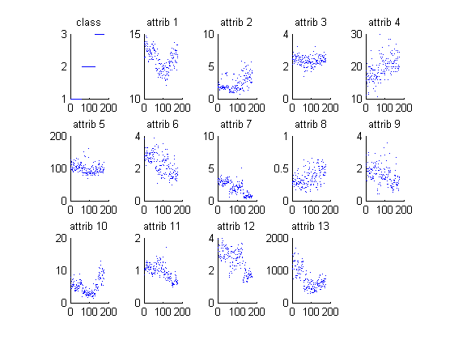
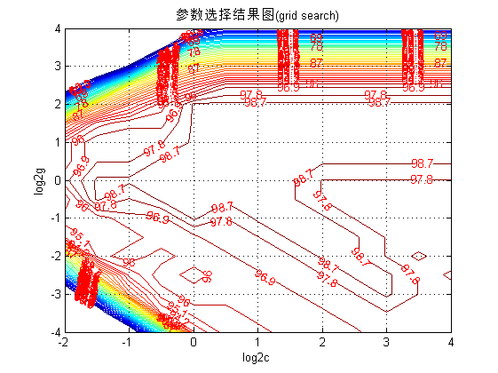
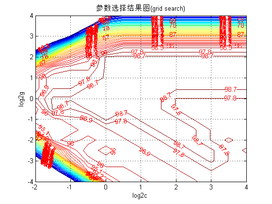
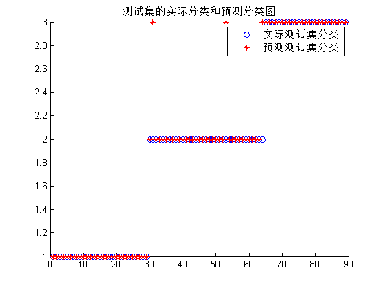

SVM神经网络中的参数优化---如何更好的提升分类器的性能
| 该案例作者申明： |
| 1：本人长期驻扎在此板块里，对该案例提问，做到有问必答。本套书籍官方网站为：video.ourmatlab.com |
| 2：点此从当当预定本书：《Matlab神经网络30个案例分析》。 |
3：此案例有配套的教学视频，视频下载方式video.ourmatlab.com/vbuy.html。 |
| 4：此案例为原创案例，转载请注明出处（《Matlab神经网络30个案例分析》）。 |
| 5：若此案例碰巧与您的研究有关联，我们欢迎您提意见，要求等，我们考虑后可以加在案例里。 |
by liyang[faruto] @ faruto's Studio~ Email:faruto@163.com QQ:516667408 http://blog.sina.com.cn/faruto http://www.matlabsky.com http://www.mfun.la http://video.ourmatlab.com
Contents
清空环境变量
function chapter13
close all; clear; clc; format compact;
数据的提取和预处理
% 载入测试数据wine,其中包含的数据为classnumber = 3,wine:178*13的矩阵,wine_labes:178*1的列向量 load chapter13_wine.mat; % 画出测试数据的可视化图 figure subplot(3,5,1); hold on for run = 1:178 plot(run,wine_labels(run)); end title('class','FontSize',10); for run = 2:14 subplot(3,5,run); hold on; str = ['attrib ',num2str(run-1)]; for i = 1:178 plot(i,wine(i,run-1)); end title(str,'FontSize',10); end % 选定训练集和测试集 % 将第一类的1-30,第二类的60-95,第三类的131-153做为训练集 train_wine = [wine(1:30,:);wine(60:95,:);wine(131:153,:)]; % 相应的训练集的标签也要分离出来 train_wine_labels = [wine_labels(1:30);wine_labels(60:95);wine_labels(131:153)]; % 将第一类的31-59,第二类的96-130,第三类的154-178做为测试集 test_wine = [wine(31:59,:);wine(96:130,:);wine(154:178,:)]; % 相应的测试集的标签也要分离出来 test_wine_labels = [wine_labels(31:59);wine_labels(96:130);wine_labels(154:178)]; % 数据预处理,将训练集和测试集归一化到[0,1]区间 % mapminmax为matlab自带的映射函数 [train_wine,pstrain] = mapminmax(train_wine'); % 将映射函数的范围参数分别置为0和1 pstrain.ymin = 0; pstrain.ymax = 1; % 对训练集进行[0,1]归一化 [train_wine,pstrain] = mapminmax(train_wine,pstrain); % mapminmax为matlab自带的映射函数 [test_wine,pstest] = mapminmax(test_wine'); % 将映射函数的范围参数分别置为0和1 pstest.ymin = 0; pstest.ymax = 1; % 对测试集进行[0,1]归一化 [test_wine,pstest] = mapminmax(test_wine,pstest); % 对训练集和测试集进行转置,以符合libsvm工具箱的数据格式要求 train_wine = train_wine'; test_wine = test_wine';
选择最佳的SVM参数c&g
% 首先进行粗略选择: c&g 的变化范围是 2^(-10),2^(-9),...,2^(10) [bestacc,bestc,bestg] = SVMcgForClass(train_wine_labels,train_wine,-10,10,-10,10); % 打印粗略选择结果 disp('打印粗略选择结果'); str = sprintf( 'Best Cross Validation Accuracy = %g%% Best c = %g Best g = %g',bestacc,bestc,bestg); disp(str); % 根据粗略选择的结果图再进行精细选择: c 的变化范围是 2^(-2),2^(-1.5),...,2^(4), g 的变化范围是 2^(-4),2^(-3.5),...,2^(4), [bestacc,bestc,bestg] = SVMcgForClass(train_wine_labels,train_wine,-2,4,-4,4,3,0.5,0.5,0.9); % 打印精细选择结果 disp('打印精细选择结果'); str = sprintf( 'Best Cross Validation Accuracy = %g%% Best c = %g Best g = %g',bestacc,bestc,bestg); disp(str);
打印粗略选择结果 Best Cross Validation Accuracy = 98.8764% Best c = 0.5 Best g = 1 打印精细选择结果 Best Cross Validation Accuracy = 98.8764% Best c = 0.353553 Best g = 0.707107
 
 利用最佳的参数进行SVM网络训练
cmd = ['-c ',num2str(bestc),' -g ',num2str(bestg)]; model = svmtrain(train_wine_labels,train_wine,cmd);
SVM网络预测
[predict_label,accuracy] = svmpredict(test_wine_labels,test_wine,model); % 打印测试集分类准确率 total = length(test_wine_labels); right = sum(predict_label == test_wine_labels); disp('打印测试集分类准确率'); str = sprintf( 'Accuracy = %g%% (%d/%d)',accuracy(1),right,total); disp(str);
Accuracy = 96.6292% (86/89) (classification) 打印测试集分类准确率 Accuracy = 96.6292% (86/89)
结果分析
% 测试集的实际分类和预测分类图 % 通过图可以看出只有三个测试样本是被错分的 figure; hold on; plot(test_wine_labels,'o'); plot(predict_label,'r*'); legend('实际测试集分类','预测测试集分类'); title('测试集的实际分类和预测分类图','FontSize',10); snapnow; % web http://www.matlabsky.com/forum-31-1.html web http://www.matlabsky.com/forum-31-1.html -new;
子函数 SVMcgForClass.m
function [bestacc,bestc,bestg] = SVMcgForClass(train_label,train,cmin,cmax,gmin,gmax,v,cstep,gstep,accstep) % SVMcgForClass % 输入: % train_label:训练集标签.要求与libsvm工具箱中要求一致. % train:训练集.要求与libsvm工具箱中要求一致. % cmin:惩罚参数c的变化范围的最小值(取以2为底的对数后),即 c_min = 2^(cmin).默认为 -5 % cmax:惩罚参数c的变化范围的最大值(取以2为底的对数后),即 c_max = 2^(cmax).默认为 5 % gmin:参数g的变化范围的最小值(取以2为底的对数后),即 g_min = 2^(gmin).默认为 -5 % gmax:参数g的变化范围的最小值(取以2为底的对数后),即 g_min = 2^(gmax).默认为 5 % v:cross validation的参数,即给测试集分为几部分进行cross validation.默认为 3 % cstep:参数c步进的大小.默认为 1 % gstep:参数g步进的大小.默认为 1 % accstep:最后显示准确率图时的步进大小.默认为 1.5 % 输出: % bestacc:Cross Validation 过程中的最高分类准确率 % bestc:最佳的参数c % bestg:最佳的参数g % about the parameters of SVMcgForClass if nargin < 10 accstep = 1.5; end if nargin < 8 accstep = 1.5; cstep = 1; gstep = 1; end if nargin < 7 accstep = 1.5; v = 3; cstep = 1; gstep = 1; end if nargin < 6 accstep = 1.5; v = 3; cstep = 1; gstep = 1; gmax = 5; end if nargin < 5 accstep = 1.5; v = 3; cstep = 1; gstep = 1; gmax = 5; gmin = -5; end if nargin < 4 accstep = 1.5; v = 3; cstep = 1; gstep = 1; gmax = 5; gmin = -5; cmax = 5; end if nargin < 3 accstep = 1.5; v = 3; cstep = 1; gstep = 1; gmax = 5; gmin = -5; cmax = 5; cmin = -5; end % X:c Y:g cg:accuracy [X,Y] = meshgrid(cmin:cstep:cmax,gmin:gstep:gmax); [m,n] = size(X); cg = zeros(m,n); % record accuracy with different c & g,and find the best accuracy with the smallest c bestc = 0; bestg = 0; bestacc = 0; basenum = 2; for i = 1:m for j = 1:n cmd = ['-v ',num2str(v),' -c ',num2str( basenum^X(i,j) ),' -g ',num2str( basenum^Y(i,j) )]; cg(i,j) = svmtrain(train_label, train, cmd); if cg(i,j) > bestacc bestacc = cg(i,j); bestc = basenum^X(i,j); bestg = basenum^Y(i,j); end if ( cg(i,j) == bestacc && bestc > basenum^X(i,j) ) bestacc = cg(i,j); bestc = basenum^X(i,j); bestg = basenum^Y(i,j); end end end % draw the accuracy with different c & g figure; [C,h] = contour(X,Y,cg,60:accstep:100); clabel(C,h,'FontSize',10,'Color','r'); xlabel('log2c','FontSize',10); ylabel('log2g','FontSize',10); title('参数选择结果图(grid search)','FontSize',10); grid on;
相关论坛： 《Matlab神经网络30个案例分析》官方网站：video.ourmatlab.com Matlab技术论坛：www.matlabsky.com Matlab函数百科：www.mfun.la Matlab中文论坛：www.ilovematlab.com |